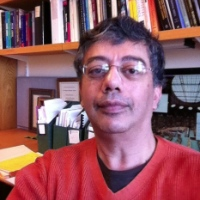
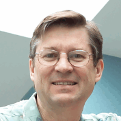
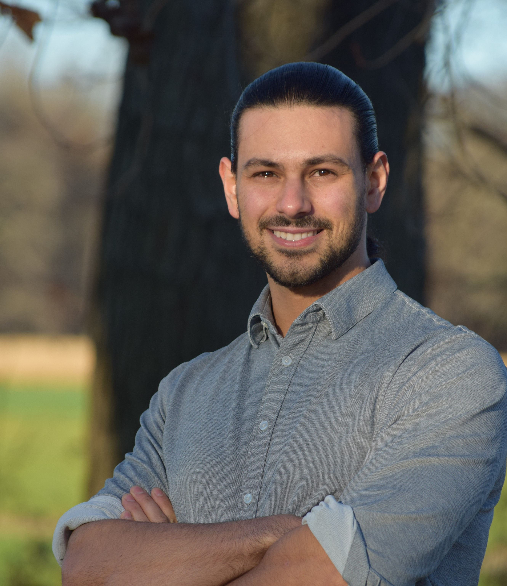
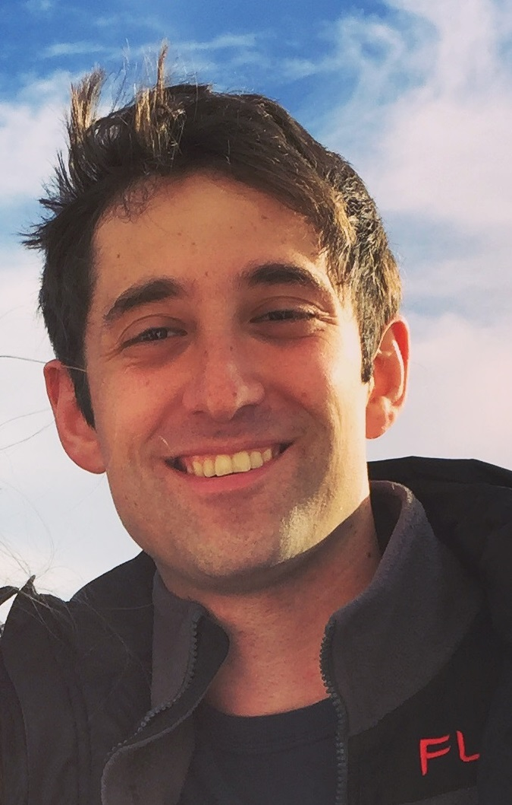
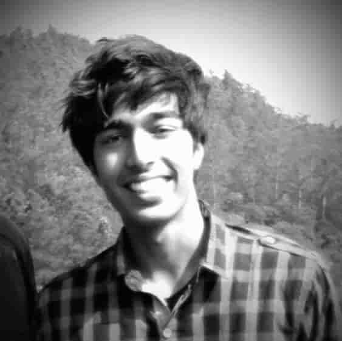
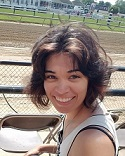
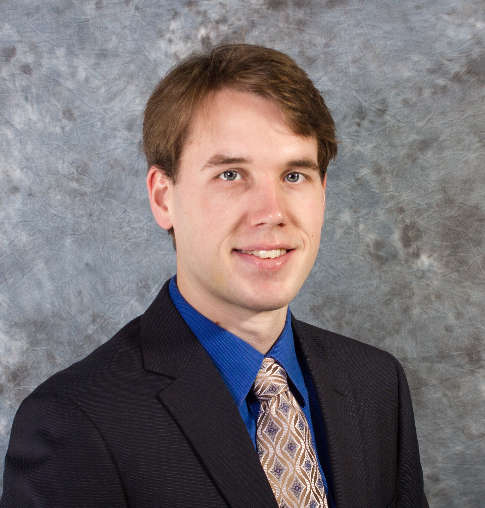

People
Directors
| Philip S. Thomas | Co-Director | pthomas@cs.umass.edu | |
|  | Sridhar Mahadevan | Co-Director Not accepting new students |
mahadeva@cs.umass.edu |
|  | Andrew Barto | Director Emeritus Not accepting new students |
barto@cs.umass.edu |
Staff
| Susan Overstreet | Grants and Contracts Coordinator | overstre@cs.umass.edu |
Doctoral Students
| Clemens Rosenbaum | PhD Candidate | cgbr@cs.umass.edu | |
| Thomas Boucher | PhD Candidate | boucher@cs.umass.edu | |

|
Ian Gemp | PhD Candidate | impgemp@cs.umass.edu |
| Francisco Garcia | PhD Candidate | fmgarcia@cs.umass.edu | |
| Stephen Giguere | PhD Candidate | sgiguere@cs.umass.edu | |
|  | Chris Nota | PhD Student | cnota@cs.umass.edu |
|  | James Kostas | PhD Student | jkostas@cs.umass.edu |
|  | Yash Chandak | PhD Student | ychandak@cs.umass.edu |
|  | Blossom Metevier | PhD Student | bmetevier@cs.umass.edu |
|  | Scott Jordan | PhD Student | sjordan@cs.umass.edu |
Undergraduate Students
| Sarah Brockman | Honors Project | brockman@umass.edu | |
| Michael Amirault | Honors Project | mcamirault@umass.edu |
Alumni (Doctoral Students)
| Name | Adviser | Year | Current Website |
|---|---|---|---|
| CJ Carey | Sridhar Mahadevan | 2017 | link |
| Bo Liu | Sridhar Mahadevan | 2015 | link |
| Chris Vigorito | Andrew Barto | 2015 | link |
| Philip Thomas | Andrew Barto | 2015 | link |
| Bruno Castro da Silva | Andrew Barto | 2015 | link |
| William Dabney | Andrew Barto | 2014 | |
| Scott Niekum | Andrew Barto | 2013 | link |
| Yariv Z. Levy | Andrew Barto | 2012 | link |
| Scott Kuindersma | Andrew Barto | 2012 | link |
| George Konidaris | Andrew Barto | 2011 | link |
| Jeffrey Johns | Sridhar Mahadevan | 2010 | |
| Chang Wang | Sridhar Mahadevan | 2010 | link |
| Alicia "Pippin" Peregrin Wolfe | Andrew Barto | 2010 | link |
| Sarah Osentoski | Sridhar Mahadevan | 2009 | link |
| Ashvin Shah | Andrew Barto | 2008 | link |
| Özgür Şimşek | Andrew Barto | 2008 | link |
| Khashayar Rohanimanesh | Sridhar Mahadevan | 2006 | |
| Mohammad Ghavamzadeh | Sridhar Mahadevan | 2005 | link |
| Anders Jonsson | Andrew Barto | 2005 | link |
| Thomas Kalt | Andrew Barto | 2005 | |
| Balaraman Ravindran | Andrew Barto | 2004 | link |
| Michael Rosenstein | Andrew Barto | 2003 | |
| Michael Duff | Andrew Barto | 2002 | |
| Amy McGovern | Andrew Barto | 2002 | link |
| Theodore Perkins | Andrew Barto | 2002 | link |
| Doina Precup | Andrew Barto | 2000 | link |
| Bob Crites | Andrew Barto | 1996 | |
| S. J. Bradtke | Andrew Barto | 1994 | |
| Satinder Singh | Andrew Barto | 1993 | link |
| J. R. Backrach | Andrew Barto | 1992 | link |
| Vijaykumar Gullapalli | Andrew Barto | 1992 | |
| Robert A. Jacobs | Andrew Barto | 1990 | link |
| J. S. Judd | Andrew Barto | 1988 | |
| Charles W. Anderson | Andrew Barto | 1986 | link |
| Richard S. Sutton | Andrew Barto | 1984 | link |
Past Postdocs
| Name | Adviser | Year | Current Website |
|---|---|---|---|
| Jay Buckingham | Andrew Barto | ||
| Michael Kositsky | Andrew Barto | 1998 - 2001 | |
| Matthew Schlesinger | Andrew Barto | 1998 - 2000 | link |
| Andrew H. Fagg | Andrew Barto | 1998 - 2004 | link |
| Sascha E. Engelbrecht | Andrew Barto | 1996 - 2002 | |
| Vijaykumar Gullapalli | Andrew Barto | 1992 - 1994 | |
| Michael Jordan | Andrew Barto | link |
Past Masters and Bachelors Students
| Name | Adviser | Year | Degree |
|---|---|---|---|
| Jonathan Leahey | Sridhar Mahadevan | 2013 | MS |
| Jie Chen | Sridhar Mahadevan | 2013 | MS |
| Andrew Stout | Andrew Barto | 2011 | MS |
| Armita Kaboli | Andrew Barto | 2011 | MS |
| Peter Krafft | Andrew Barto | 2010 | BS |
| Colin Barringer | Andrew Barto | 2007 | MS |
| Suchi Saria | Sridhar Mahadevan | 2002 - 2004 | BS |
| Eric Sondhi | Sridhar Mahadevan | BS | |
| Ilya Scheidwasser | Sridhar Mahadevan | BS |